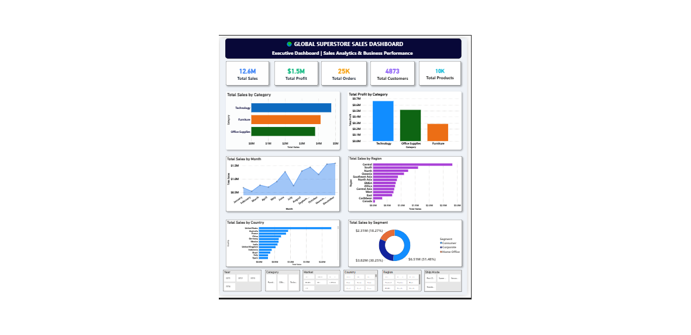
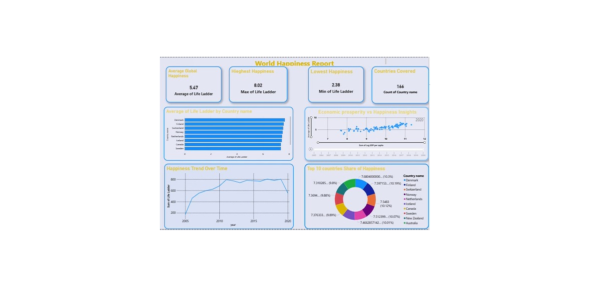

DATA ANALYTICS
Global Superstore Analysis
An exploratory data analysis and Power BI dashboard project focused on understanding sales, profit and business performance.
PROJECT TYPE
Data Analytics
DATASET
Global Superstore
TOOLS
Python · Pandas · Power BI · SQL
DATA SIZE
51,290 Rows
THE PROJECT
Understanding the business data.
The Global Superstore dataset contains information about orders, customers, products, sales, discounts and profits across different regions and countries.
The goal of this project was to explore the dataset, identify important patterns and transform the findings into useful visual insights.
Objectives
- Analyze sales performance.
- Understand profitability.
- Identify strong-performing categories.
- Examine country-level sales.
- Analyze sales trends over time.
VISUALS
Project screenshots.


INSIGHTS
What the analysis revealed.
Category Performance
Technology recorded the highest overall sales among the major categories in the dataset.
Sales Trends
Monthly analysis helped identify changes in sales performance over time.
Geographic Analysis
Country-level analysis highlighted differences in sales performance across markets.